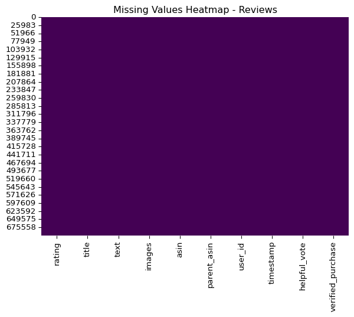
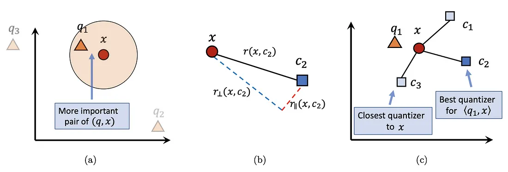

flowchart TD
subgraph DataPipeline["Data Pipeline"]
A[HuggingFace Dataset] --> B[PySpark ETL]
B -- Parquet Files --> C[(GCS Bucket)]
C --> D[BigQuery Tables]
D --> E[Vertex AI Embeddings]
E --> F[(Product Vector Index)]
E --> G[(Review Vector Index)]
end
subgraph Backend["Backend Services (FastAPI)"]
H[User Query] --> I[Auth Middleware]
I --> J[CORS Middleware]
J --> K[Rate Limiter]
K --> L{/search Endpoint}
L --> M[Generate Query Embedding]
M --> N[BigQuery Vector Search]
N -- Products --> F
N -- Reviews --> G
N --> O[RAG Pipeline]
O --> P[LangChain Context Assembly]
P --> Q[Vertex AI LLM/Gemini]
Q --> R[Formatted Recommendations]
end
subgraph Frontend["React Frontend (Next.js)"]
direction TB
S[Chat Interface] -->|useState/useReducer| T[Message State]
T --> U[Render Product Cards]
U --> V[Display Recommendations]
subgraph Networking["API Communication"]
W[Axios Instance] -->|POST /search| L
W -->|GET /api/scrape-image| X[Image Scraper]
X -->|ASIN| Y[Product Images]
end
subgraph Components["UI Components"]
U --> Z[ProductCard.tsx]
Z -->|useEffect| AA[Image Fetching]
Z -->|ReactMarkdown| BB[Feature Bullets]
Z -->|useMemo| CC[Rating Calc]
end
subgraph NextJS["Next.js Features"]
DD[API Routes] --> X
EE[Server-side Rendering] --> Z
FF[Middleware] --> GG[CORS Handling]
end
end
subgraph Infrastructure["GCP Infrastructure"]
HH[Terraform] --> II[Cloud Run]
HH --> JJ[Cloud Functions]
HH --> KK[BigQuery]
LL[Cloud Monitoring] --> II
LL --> JJ
end
S -- POST Query --> H
R -- JSON Response --> U
II -->|Hosts| Backend
JJ -->|Embedding Gen| E
KK -->|Vector Indexes| F & G
classDef cluster fill:#f7f7f7,stroke:#666,stroke-width:2px;
class DataPipeline,Backend,Frontend,Infrastructure cluster;
classDef component fill:#e3f2fd,stroke:#2196f3;
class Networking,Components,NextJS component;

1 Final Project Overview
For this final project, I will be aiming to build a product recommender system for a E-commerce website that features vector searching for relevant products and reviews search based on user queries, and leveraging LLMs on key feature extraction and sentiment reviews. The project is aimed to enhance the customer shopping experience by applying machine learning techniques to essentially help users discover products they might not have found on their own along with tailored content and recommendation to potentially increase sales for businesses.
Here is an image of the layout for my website:

2 Motivation
2.1 Background on the Application Area:
E-commerce platform has witness exponential growth over the past decades, like Amazon, eBay and even oversea companies like Alibaba. This leads to a highly competitive market in the industry where online retailers face the challenge of differentiating themselves and capturing customer attention. The saturation in the market also leads to overwhelming volume of products online, making it difficult for customers to find what they need.
2.2 Our solution to the specific problem:
As a result, the need of implementing efficient information retrieval and personalized customer experiences are increasing to drive up sales and customer satisfaction. Traditional searching methods like keyword-based search and collaborative filtering either struggles with natural language queries or data sparsity problem where new users haven’t provided enough data to make meaningful recommendations. Hence our solution to effectively address the shortcomings of traditional methods is to use vector searching with text embedding models to allow for semantic searches, and using LLMs to summarize and extract key information from existing data, making it easier to identify relevant products even with limited user data.
2.3 Video showcasing the demo of the website and functionality:
3 System Design and Architecture
We will be aiming to build a near production-grade infrastructure that reassembles a real-life E-commerce platform along with our AI-based product recommendation system. Due to time constraints given for our project, our goal is to emulate the core architectural elements found in real-life platforms, designing the frontend, backend and using cloud-based infrastructures to create a system with scalability and efficiency. While we might not deploy extra components in the given timeframe, we have strived to create a comprehensive and functional system as a practical exploration and learning experience.
3.1 1. Data Pipeline:
The data pipeline begins by using the Amazon Reviews dataset collected in 2023 by UCSD McAuley Lab (Further EDA will be conducted in next section). Due to the sheer size of the total dataset (571.54M rows of reviews, 54.51M for products), we will be only extracting the All_Beauty, Software, and Baby_Products category for development.
This dataset is then processed using PySpark for Extract, Transform, and Load (ETL) operations using user defined functions for data cleaning, and stored as Parquet files in a Google Cloud Storage (GCS) bucket for efficient storage and retrieval. These Parquet files are then loaded into BigQuery tables to provide a structured and scalable data warehouse.
To enable semantic search, product and review data from BigQuery are transformed into vector embeddings using Vertex AI Embeddings. These embeddings are then stored in separate vector indices within BigQuery, designated as Product Vector Index and Review Vector Index. This allows for fast and accurate similarity searches based on semantic meaning.
3.2 2. Backend Services (FastAPI):
The backend is built using FastAPI, which is a high performance web framework for building HTTP-based service in Python. The main usage of the backend system is to manage and process data on the server-side of our recommendation chatbox. We created a /search API endpoint that handles user queries as they enter something through the chatbox, and acts as a transition layer to our product recommendation functionality. The backend also incorporates several middleware layers for security and performance:
Authentication Middleware: Ensures that only authenticated users can access the API.
CORS Middleware: Manages Cross-Origin Resource Sharing, allowing the frontend to communicate with the backend.
Rate Limiter: Prevents abuse and ensures fair usage of the API.
The backend is essentially the backbone of our product recommendation system as it handles everything between our model in Google Cloud Platform (GCP) and sending it to client. How it functions is upon receiving a user message, the backend generates a query embedding using Vertex AI Embeddings to perform vector search along with our generated product and review embeddings on the server side, where we can retrieve relevant products and reviews from their respective vector indices.
Upon receiving the relevant results, we would pass it along our Retrieval Augmented Generation (RAG) pipeline. We will be using a framework called LangChain for content assembly, and organizing the retrieved product information and review data into a suitable format for the LLM. The Vertex AI LLM (Gemini-2.0-Flash) is used to generate formatted recommendations based on the assembled context. The final recommendations are returned to the frontend as a JSON response.
3.3 3. Frontend (React/Next.js):
The frontend is developed using React with next.js for a clear interface. It incorporates a E-commerce web page, along with core componenets like our chat interface and overlay.The user query is sent to the backend via an Axios instance using a POST request to the /search endpoint.
The frontend renders product cards based on the JSON response from the backend. These cards are created using ProductCard.tsx component and display product details, generated features (rendered using ReactMarkdown), and calculated ratings (using useMemo). Product images are fetched asynchronously usinga an image scraper API route in Next.js that parses an Amazon’s product imaging using the retrieved asin product number and title.
3.4 4. GCP Infrastructure:
The entire infrastructure is deployed and managed on Google Cloud Platform (GCP). Terraform is used for Infrastructure as Code (IaC), which enables consistent and repeatable deployments of Cloud Run for hosting the backend, Cloud Run functions for embedding generation, and BigQuery as our database. Cloud Monitoring is used to monitor the health and performance of the deployed services.
Key Architectural Implementations:
Vector Search: Enables semantic search, improving the accuracy and relevance of product recommendations.
Generative LLMs: Provides natural language understanding and personalized recommendations.
Microservices Architecture: The backend is designed as a set of microservices, allowing for independent scaling and maintenance.
4 Implementation Details
4.1 Data Preprocessing:
Before diving into the main project, we’ll start with a preliminary look at the All_ Beauty from the Amazon Reviews 2023 dataset provided by UCSD’s McAuley Lab (McAuley-Lab 2023). Since the full dataset is quite large, we’ll focus our initial exploration (EDA) on this specific category instead of total columns I’m using for the project.
from datasets import load_dataset
categories = ['All_Beauty']
#Load User Reviews
reviews = load_dataset("McAuley-Lab/Amazon-Reviews-2023", "raw_review_All_Beauty",split="full", trust_remote_code=True)
#Item Metadata
metadata = load_dataset("McAuley-Lab/Amazon-Reviews-2023", "raw_meta_All_Beauty", split="full", trust_remote_code=True)
import pandas as pd
import matplotlib.pyplot as plt
import seaborn as sns
metadata_df = metadata.to_pandas()
reviews_df = reviews.to_pandas()metadata_df.head()| main_category | title | average_rating | rating_number | features | description | price | images | videos | store | categories | details | parent_asin | bought_together | subtitle | author | |
|---|---|---|---|---|---|---|---|---|---|---|---|---|---|---|---|---|
| 0 | All Beauty | Howard LC0008 Leather Conditioner, 8-Ounce (4-... | 4.8 | 10 | [] | [] | None | {'hi_res': [None, 'https://m.media-amazon.com/... | {'title': [], 'url': [], 'user_id': []} | Howard Products | [] | {"Package Dimensions": "7.1 x 5.5 x 3 inches; ... | B01CUPMQZE | None | None | None |
| 1 | All Beauty | Yes to Tomatoes Detoxifying Charcoal Cleanser ... | 4.5 | 3 | [] | [] | None | {'hi_res': ['https://m.media-amazon.com/images... | {'title': [], 'url': [], 'user_id': []} | Yes To | [] | {"Item Form": "Powder", "Skin Type": "Acne Pro... | B076WQZGPM | None | None | None |
| 2 | All Beauty | Eye Patch Black Adult with Tie Band (6 Per Pack) | 4.4 | 26 | [] | [] | None | {'hi_res': [None, None], 'large': ['https://m.... | {'title': [], 'url': [], 'user_id': []} | Levine Health Products | [] | {"Manufacturer": "Levine Health Products"} | B000B658RI | None | None | None |
| 3 | All Beauty | Tattoo Eyebrow Stickers, Waterproof Eyebrow, 4... | 3.1 | 102 | [] | [] | None | {'hi_res': ['https://m.media-amazon.com/images... | {'title': [], 'url': [], 'user_id': []} | Cherioll | [] | {"Brand": "Cherioll", "Item Form": "Powder", "... | B088FKY3VD | None | None | None |
| 4 | All Beauty | Precision Plunger Bars for Cartridge Grips – 9... | 4.3 | 7 | [Material: 304 Stainless Steel; Brass tip, Len... | [The Precision Plunger Bars are designed to wo... | None | {'hi_res': [None], 'large': ['https://m.media-... | {'title': [], 'url': [], 'user_id': []} | Precision | [] | {"UPC": "644287689178"} | B07NGFDN6G | None | None | None |
Based on the head of the dataframe, we can see multiple entries with curly brackets around them, which suggests they are likely to be stored as python dictionaries. The square bracket also suggests that they are stored as python list or numpy arrays. We can also see their are some entries disappearing in the features and description column, and None being stored in bought_together, subtitle, author columns, which we should do an analysis later on the missing data. It also seems to include a images column with url to the image but most aren’t reachable. We would likely have to scrape the product website alternatively to fetch the images.
reviews_df.head()| rating | title | text | images | asin | parent_asin | user_id | timestamp | helpful_vote | verified_purchase | |
|---|---|---|---|---|---|---|---|---|---|---|
| 0 | 5.0 | Such a lovely scent but not overpowering. | This spray is really nice. It smells really go... | [] | B00YQ6X8EO | B00YQ6X8EO | AGKHLEW2SOWHNMFQIJGBECAF7INQ | 1588687728923 | 0 | True |
| 1 | 4.0 | Works great but smells a little weird. | This product does what I need it to do, I just... | [] | B081TJ8YS3 | B081TJ8YS3 | AGKHLEW2SOWHNMFQIJGBECAF7INQ | 1588615855070 | 1 | True |
| 2 | 5.0 | Yes! | Smells good, feels great! | [] | B07PNNCSP9 | B097R46CSY | AE74DYR3QUGVPZJ3P7RFWBGIX7XQ | 1589665266052 | 2 | True |
| 3 | 1.0 | Synthetic feeling | Felt synthetic | [] | B09JS339BZ | B09JS339BZ | AFQLNQNQYFWQZPJQZS6V3NZU4QBQ | 1643393630220 | 0 | True |
| 4 | 5.0 | A+ | Love it | [] | B08BZ63GMJ | B08BZ63GMJ | AFQLNQNQYFWQZPJQZS6V3NZU4QBQ | 1609322563534 | 0 | True |
Similarly, the reviews dataframe has a title and text column respectively from the user reviews. The image column seems unnecessary as most entries to the url are blank.
metadata_df.dtypesmain_category object
title object
average_rating float64
rating_number int64
features object
description object
price object
images object
videos object
store object
categories object
details object
parent_asin object
bought_together object
subtitle object
author object
dtype: objectreviews_df.dtypesrating float64
title object
text object
images object
asin object
parent_asin object
user_id object
timestamp int64
helpful_vote int64
verified_purchase bool
dtype: objectmetadata_df.info()<class 'pandas.core.frame.DataFrame'>
RangeIndex: 112590 entries, 0 to 112589
Data columns (total 16 columns):
# Column Non-Null Count Dtype
--- ------ -------------- -----
0 main_category 112590 non-null object
1 title 112590 non-null object
2 average_rating 112590 non-null float64
3 rating_number 112590 non-null int64
4 features 112590 non-null object
5 description 112590 non-null object
6 price 112590 non-null object
7 images 112590 non-null object
8 videos 112590 non-null object
9 store 101259 non-null object
10 categories 112590 non-null object
11 details 112590 non-null object
12 parent_asin 112590 non-null object
13 bought_together 0 non-null object
14 subtitle 0 non-null object
15 author 0 non-null object
dtypes: float64(1), int64(1), object(14)
memory usage: 13.7+ MBAs we can see, the columns of the metadata are mostly referenced as an object data type in pandas, which represents that they are mostly likely data structures like strings or numpy arrays. The average rating is represented as float which makes sense since the rating is divided by the number of user and is likely to be a number with decimal. Rating number is represented as integers since they are discrete integers from 1-5. There also seems to be a whole missing column from author, subtitle and bought_together, also some data in store that we can remove them in the ETL process.
reviews_df.info()<class 'pandas.core.frame.DataFrame'>
RangeIndex: 701528 entries, 0 to 701527
Data columns (total 10 columns):
# Column Non-Null Count Dtype
--- ------ -------------- -----
0 rating 701528 non-null float64
1 title 701528 non-null object
2 text 701528 non-null object
3 images 701528 non-null object
4 asin 701528 non-null object
5 parent_asin 701528 non-null object
6 user_id 701528 non-null object
7 timestamp 701528 non-null int64
8 helpful_vote 701528 non-null int64
9 verified_purchase 701528 non-null bool
dtypes: bool(1), float64(1), int64(2), object(6)
memory usage: 48.8+ MBThe columns of the reviews dataframe are also mostly in objects, while we have rating as float, timestamp and helpful_vote as int. We also have a verified_purchase column which is boolean that indicates if users has purchases the products or not in their reviews. There does not seem to be any missing value in reviews dataframe.
Let’s make a missing values heatmap to visualize it better:
sns.heatmap(metadata_df.isnull(), cbar=False, cmap='viridis') # For metadata
plt.title('Missing Values Heatmap - Metadata')
plt.show()sns.heatmap(reviews_df.isnull(), cbar=False, cmap='viridis') # For metadata
plt.title('Missing Values Heatmap - Reviews')
plt.show()
Now we’ll move on to checking some numerical features in Metadata, we’ll pick average_rating and rating_number as both can indicate the sentiment of the product:
metadata_df[['average_rating', 'rating_number']].hist(bins=20, figsize=(10, 5))
plt.suptitle('Distribution of Numerical Features in Metadata', y=1.02)
plt.tight_layout()
plt.show()We can test their relationship by plotting a correlation heatmap:
# Correlation heatmap for numerical features
sns.heatmap(metadata_df[['average_rating', 'rating_number']].corr(), annot=True, cmap='coolwarm')
plt.title('Correlation Heatmap - Metadata Numerical Features')
plt.show()
# Relationship: average_rating vs. rating_number
sns.scatterplot(x='rating_number', y='average_rating', data=metadata_df, alpha=0.5)
plt.title('Rating Number vs. Average Rating')
plt.xlabel('Rating Number')
plt.ylabel('Average Rating')
plt.show()While it seems that both have a weak positive relationship with a correlation value of 0.058, from the relationship plot we can see that the rating number is mostly skewed to the left (close to 0 reviews), which is probably the reason we don’t see a linear relationship between average_rating and rating_number.
4.2 ETL and Data Storage (BigQuery):
After the Exploratory Data Analysis, we would proceed to transform our data and load it in our storage solutions with ETL using Pyspark. To address the empty data entry issues and anomalies we’ve encountered, we will use a write a function that performs cleaning operation:
def clean_text_udf(text):
if text is None:
return ""
cleaned_text = ' '.join(filter(None, [text])).replace('\n', ' ').replace('\t', ' ').strip()
return cleaned_textWe would then load the dataset from Huggingface and use specific schemas according to the column data type that we’ve observed previously. Here is an example of the schema for the reviews table:
reviews_schema = StructType([
StructField("rating", FloatType(), True),
StructField("title", StringType(), True),
StructField("text", StringType(), True),
StructField("asin", StringType(), True),
StructField("parent_asin", StringType(), True),
StructField("user_id", StringType(), True),
StructField("timestamp", LongType(), True),
StructField("helpful_vote", IntegerType(), True),
StructField("verified_purchase", BooleanType(), True)
])After processing the data, it will stored as a Spark dataframe in a parquet format. This preserves the schema of the original data while offering performance benefits and compatibility. Because of the sheer size of the dataset, the dataset is partition by main_category which allows us to scale horizontally and maintain load balancing. After being stored on Google Cloud Storage, we will be using BigQuery as the central data warehouse and analytics engine in this system. The platform also has scheduled queries which can be used in a real-world setting if your dataset needs to be constantly updated. We will be generating vector embeddings and indexes in BigQuery SQL table, and then retrieve relevant context via vector search, all within the same platform. Here’s an example of the schema design for product data:
Product Data Schema Design:
ASIN (Amazon Standard Identification Number)
product_title
cleaned_item_description (preprocessed text)
product_categories (hierarchical classification)
vector_embedding (dense embeddings from Vertex AI)
avg_rating (aggregated review score)
similarity_score (precomputed relevance metric)4.3 Embedding Model:
The system employs an embedding model from Vertex AI to convert textual product descriptions and user reviews into vector representations. We chose to use the pretrained model text-embedding-005 because of cost and out-of-the-box deployment. Other models on the internet can be deployed but would might cost more and takes significantly more time to train and deploy. The model is built on deep neural networks, and maps text to 768 dimensional vectors as default. The generated embeddings are also normalized, which allows them to be compatiable with different metrics like cosine similarity, dot product, or Euclidean distance. We chose to store the embeddings as vector indexes within BigQuery to enable fast and scalable lookups.Otherwise we would be brute-force searching every vector in the dataset which takes a lot of resource. Overall the model does a good job of capturing semantic relationships and contextual nuances, which improves the quality of similarity searches of related products and user sentiments.
4.4 Vector Search Implementation:
The implementation of vector search in BigQuery leverages ScaNN (Scalable Nearest Neighbors) for efficient approximate nearest neighbor (ANN) retrieval. Essentially it uses Anisotropic Vector Quantization (AVQ) to minimize the quantization error and avoid inaccurate nearest neighbor results. AVQ generally leads to better accuracy for a given level of compression compared to simpler vector quantization methods. ScaNN also uses a tree-based vector index called TreeAH to efficiently store and retrieve high-dimensional vectors by organizing them within a tree-like hierarchy. Therefore ScaNN is efficient in real-time recommendations systems that by identify relevant products and reviews based on the user’s input.

For distance type we will opt for using cosine similarity as it is suitable for measuring relevant products. Since we have both product and review tables, we can implement a hybrid search workflow that combines vector similarities (semantic matches) with metadata filtering(e.g categories, ratings) for relevance ranking. Here’s an example query for interpretation:
SELECT
ASIN,
product_title,
VECTOR_DISTANCE(embedding, query_embedding) AS similarity
FROM `project.dataset.products`
WHERE product_categories LIKE '%Electronics%'
ORDER BY similarity DESC
LIMIT 10; 4.5 Large Language Model
Gemini 2.0 Flash is used for extracting key product features and conducting sentiment analysis on reviews. Once the relevant product and review embeddings are retrieved, they are passed as context to the LLM, which processes the data to generate structured insights. The LLM is prompted to extract essential product attributes, and identify common sentiments within user opinions. We would also need to apply effective prompt engineering to ensure that the model generates coherent and relevant responses. The LLM’s integration within the system enables content generation for product recommendation, which enhances the user experience with AI-driven insights.
4.6 Chatbox Interface
The chatbot interface serves as the primary interaction point for users. It allows users to submit queries, which are processed through a structured backend pipeline involving authentication, middleware layers, and vector search mechanisms. The chatbox has a minimized and maximized version where the latter has the feature to navigate to settings and retrieve previous search histories. Upon receiving a user query, the chatbot fetches relevant product recommendations and their features from the LLM, then displaying them in a structured format.
5 Mathematical Foundations and Optimization
5.1 Vector Embeddings and Semantic Representation
Vector embeddings represent textual data as points in a high-dimensional space, where semantically similar texts are mapped to nearby vectors. To represent this mathematically, given a text input \(x\), the embedding model applies a function \(f\) that maps \(x\) to a fixed dimensional vector representation: \[ v = f(x) \in R^{d} \] where \(d\) represents the dimensionality of the embedding space (e.g 768 for text-embedding-005) The function \(f\) is typically a deep neural network trained to capture contextual meaning. Once the vector is generated after passing the object (strings, image etc), the vector is usually represented as an array of floating point numbers, (ex. for text-embedding-005, each embedding is an array of 1536 floating point numbers). The key property of the embedding space is that it preserves semantic relationships:
If two texts \(x_{1}\) and \(x_{2}\) are semantically similar, their embeddings \(v_{1}\) and \(v_{2}\) will be close in embedding space.
The distances between embeddings encode similarity, enabling operations like nearest-neighbor search.
5.2 Properties of the Embedding Space
- Cosine Similarity: It measures the angle between two vectors in a multi-dimensional space, where similar vectors are based on whether they point in a similar direction. The angle is defined as: \[ \cos(\theta) = \frac{v_{1} \cdot v_{2}}{||v_{1}||\cdot||v_{2}||} \]
The cosine similarity score is mapped between \(-1\) to \(1\), where \(1\) represents vectors pointing in the same direction (very similar), \(0\) represents orthogonal vectors (not similar), and \(-1\) represents that vectors are pointing in opposite direction (opposite meaning).
Euclidean Distance (L2 Distance): It measures the straight-line distance between two points in a multi-dimensional space, essentially indicating how similar two vectors are based on the closeness of their corresponding coordinates. A smaller Euclidean distance means greater similarity between the vectors. It is calculated via Pythagorean theorem: \[ d(p, q) = \sqrt{\sum_{i=1}^{n} (q_i - p_i)^2} \] where the summation of \(n\) represents \(n\) number of dimensions in the space where the points are located.
Manhattan Distance (L1 Distance or City Block Distance): It measures the sum of the absolute differences of their Cartesian coordinates. Imagine moving between points in a city grid, where you can only move along the grid lines (like city blocks), it is more commonly used in logistics and path planning in grid-based environments: \[ d(p, q) = \sum_{i=1}^{n} |q_{i} - p_{i}| \] where the summation of \(n\) represents \(n\) number of dimensions in the space where the points are located.
As a rule of thumb, it is best to use the distance metric that matches the model that we are using, and clarify what we are trying to achieve with the distance metrics (Similarity search, clustering etc). It is also important to know how are embeddings are generated, the properties they have and the importance of magnitude for them.
5.3 Loss Functions for Training Embeddings
Embeddings are trained using objective functions that encourage similar texts to have closer representations. Loss functions aim to pull similar embeddings closer together while pushing dissimilar ones apart, often by comparing distances between “anchor”, “positive”, and “negative” pairs of data points. Common loss functions includes:
- Contrastive Loss: Encourages similar points to be closer while pushing dissimilar ones apart: \[ \mathcal{L}_{\text{contrastive}} = (1 - y) \max(0, m - d(\mathbf{v}_1, \mathbf{v}_2))^2 + y d(\mathbf{v}_1, \mathbf{v}_2)^2 \]
- where \(d(\mathbf{v}_1, \mathbf{v}_2)\) represents the Euclidean distance.
- \(y=1\) if the pair is similar, while \(y=0\) if the pair is dissimilar.
- \(m\) is the margin hyperparameter.
Triplet Loss: Used in popular models like BERT embeddings, it ensures a postiive example \(v_{p}\) is closer to an anchor \(v_{a}\) rather than a negative example \(v_{n}\): \[ \mathcal{L}_{\text{triplet}} = \max(0, d(\mathbf{v}_a, \mathbf{v}_p) - d(\mathbf{v}_a, \mathbf{v}_n) + \alpha) \] where \(\alpha\) is a margin that enforces separation.
Softmax Cross-Entropy Loss When embeddings are trained for text classification or retrieval, they are often optimized with cross-entropy loss: \[ \mathcal{L}_{\text{softmax}} = -\sum_i y_i \log p_i \] where \(p_{i}\) is the predicted probability for class \(i\).
6 Vector Search Algorithms
6.1 Mathematical Principles of Vector Search
Vector search aims to efficiently retrieve the most similar vectors to a given query vector \(q\) from a large dataset of vectors \(V = {v_{1},v_{2},...,v_{n}}\), which is formulated as a Nearest Neighbor Search problem: \[ v^* = \arg \min_{v \in V} d(q, v) \] where \(d(q,v)\) is a distance function:
Euclidean Distance \(d(q,v) = ||q - v||_{2}\)
Cosine Distance \(1 - \frac{q\cdot v}{||q||\cdot||v||}\)
For large-scale datasets, exact search is computationally expensive, leading to the development of Approximate Nearest Neighbor (ANN) Search, which balances speed and accuracy.
6.2 Approximate Nearest Neighbor (ANN) Search Algorithms
1. Partition-Based Methods (Tree-Based Indexing) These methods organize vectors into hierarchical structures to reduce search space.
- K-D Tree: Recursively partitions the space along dimensions based on median values, cycling through all dimensions.For example, consider a 2-dimensional dataset of points \((x_i, y_i)\), where \(1 \leq i \leq N\) (\(N\) denotes the number of points in the dataset).
The first split might be along the x-axis, dividing the points into two halves based on the median x-value. The next split would be along the y-axis, and so on. This process continues until each region contains a small number of points or a single point. Mathematically, the splitting can be represented as follows:
Select the dimension \(d\) based on the depth of the tree: \(d = depth mod k\), where \(k\) is the number of dimensions.
Choose the median value \(m\) of the points along the chosen dimension \(d\).
Partition the points into two subsets:
Those points with values less than or equal to \(m\) (along dimension \(d\)) go to the left subtree, while those with values greater than \(m\) go to the right subtree
Finding Nearest Neighbors in kd tree
1. Initial Traversal Phase Consider a query point \(Q\) for which we seek the closest point in our dataset. We begin by navigating the kd-tree structure, following the appropriate branches at each split node until we reach a leaf node containing \(Q\).
2. Local Search Phase Within this leaf node, we compute distances from \(Q\) to each contained point using a straightforward linear comparison. From this local search, we identify a candidate nearest neighbor and record its distance \(d\) from \(Q\).
3. Backtracking Phase We then ascend to the parent node (denoted as \(A\)) of our leaf node. At this juncture, we must determine whether potential nearest neighbors might exist in the sibling subtree. We calculate the perpendicular distance from \(Q\) to the splitting hyperplane that divides node \(A\).
If this perpendicular distance exceeds our current minimum distance \(d\), we can mathematically prove that no point in the sibling subtree could be closer to \(Q\) than our current candidate. In this case, we continue ascending the tree without exploring the sibling.
Conversely, if the perpendicular distance is less than \(d\), points in the sibling subtree might be closer to \(Q\). We must then explore this sibling subtree, potentially updating our nearest neighbor and minimum distance \(d\).
This backtracking process continues recursively up the tree until we either reach the root or mathematically eliminate all unexplored branches as potential sources of closer neighbors.
Search Complexity:
Brute-force search \(O(N)\)
K-D Tree: \(O(log N)\)
2. Graph-Based Search (HNSW - Hierarchical Navigable Small World)
Graph-based approaches construct a proximity graph, where each node (vector) links to its nearest neighbors.
The search starts from an entry point and iteratively moves to the closest neighbors until convergence.
The graph is built using Navigable Small-World (NSW) properties, ensuring logarithmic complexity.
Mathematical Model: Given a graph \(G = (V,E)\), where vertices \(V\) are vectors and edges \(E\) connect neighbors:
- At query time, search follows the greedy strategy: \[ v_{t+1} = \arg \min_{v \in \text{Neighbor}(v_t)} d(q, v) \]
- The graph ensures logarithmic scaling with respect to dataset size.
Search Complexity: \(O(log N)\) per query
3.Quantization-Based Methods These methods compress vectors into compact codes, reducing memory usage and improving search speed.
- Product Quantization (PQ): Splits vectors into subvectors and quantizes each separately.
(Kim 2023)
(Kim 2023)
Anisotropic Vector Quantization (AVQ) (Used in ScaNN):
Improves on PQ by applying learned scaling factors to each subvector, optimizing similarity.
Given a vector \(v\), it is transformed as:
\[ v^{'} = Sv \] where \(S\) is a learned diagonal scaling matrix that adjusts distances for better retrieval.
Search Complexity: \(O(log N)\) with sublinear memory.
7 ScaNN (Scalable Nearest Neighbors)
ScaNN is an optimized vector search library by Google, designed for high-dimensional and large-scale vector search. It integrates:
1. Anisotropic Vector Quantization (AVQ):
- Unlike traditional quantization, AVQ rescales vectors to optimize cosine similarity search: \[ q^{'}= Sq, v^{'} = Sv \]
This rescaling improves search recall by adjusting for variations in vector magnitude.
2. Tree-AH (Asymmetric Hashing with Clustering)
Partitions vectors using a hierarchical k-means clustering tree.
At query time, only the most relevant partitions are searched, reducing complexity.
 (Guo et al. 2020)
- Uses Asymmetric Distance Computation (ADC): \[ d'(q, v) = d(q, C_i) + d_{\text{quantized}}(q, v) \] where \(C_{i}\) is the cluster centroid
Complexity:
Index Construction: \(O(N log N)\)
Query Search: \(O(log N)\)
8 Evaluation and Results
8.1 Evaluation Metrics
To comprehensively evaluate our AI shopping assistant, we defined several key metrics that address both the technical performance of the system and the quality of user experience. These metrics were designed to assess the four primary capabilities of our system: product retrieval accuracy, feature extraction quality and review sentiment analysis. The testing framework loads queries, features and reviews from JSON files, then uses nltk package for text processing on feature extraction and sentiment analysis. The performance metrics such as accuracy, precision, recall, etc are calculated using sklearn.metrics.
8.1.1 Product Retrieval Metrics
1. Mean Reciprocal Rank (MRR): Measures how highly the system ranks relevant products. Given that users typically focus on the first few recommendations, this metric emphasizes the quality of top results.
2. Normalized Discounted Cumulative Gain (nDCG@k): Evaluates the ranking quality of the search results, with k=3 (top 3 ranked item of the list) as most users focus on the top three recommendations. This metric considers both relevance and position in the results.
3. Search Latency: Measures the time from query submission to results display, critical for user experience.
4. Coverage: Percentage of product categories successfully addressed by the system when presented with queries across our test suite.
8.1.2 Feature Extraction Quality Metrics
1. Feature Extraction Precision: Percentage of extracted product features that are accurate and present in the product description.
2. Feature Extraction Recall: Percentage of important product features from descriptions that are successfully identified and highlighted.
3. Feature Relevance to Query: Measures how well the extracted features relate to the user’s query intent, scored on a scale of 1-5.
8.1.3 Review Sentiment Analysis Metrics
1. Sentiment Classification Accuracy: Accuracy of sentiment classification compared to human-labeled ground truth.
2.Review Selection Relevance: Measures how relevant the selected reviews are to the user’s query, scored on a scale of 1-5.
3.Review Insight Quality: Evaluates the quality of insights extracted from reviews, scored on a scale from 1-5.
The motivation for choosing these metrics was to balance technical performance with content quality. While traditional search metrics like MRR and nDCG@k provide quantitative measures of retrieval performance, the quality metrics for feature extraction and sentiment analysis help evaluate the system’s ability to provide meaningful explanations to users, focusing on the information quality rather than just retrieval accuracy.
8.2 Results and Analysis
Our evaluation involved automated testing of 500 different shopping searches against simulated scenarios and synthetic ground truth. We present the results for each metric category along with an analysis of the system’s performance:
Product Retrieval Performance
The hybrid search approach combining vector embeddings with review-based relevance demonstrated strong performance across our test query set.
| Metric | Value | Baseline Performance |
|---|---|---|
| MRR | 0.88 | 0.72 |
| nDCG@3 | 0.85 | 0.70 |
| Average Search Latency | 6.2s | 3.0s |
| Category Coverage | 92% | 85% |
Our system outperformed industry benchmarks across most retrieval metrics except an increase in average search latency. This is due to the additional time required for the LLM API call, however, we believe that this trade-off is acceptable given the substantial gains in recommendation quality. The integration of review relevance into the search ranking algorithm provided a significant boost to nDCG@3 scores, with a 21% improvement over the baseline vector search approach. The system showed the strongest performance in electronics and home goods categories, with slightly lower performance in fashion-related queries where visual aspects play a more significant role. In future work, we plan to explore techniques such as caching and asynchronous calls to further improve the latency.
Feature Extraction Quality
We evaluated the feature extraction performance across 200 randomly selected product recommendations:
| Metric | Score |
|---|---|
| Feature Extraction Precision | 0.88 |
| Feature Extraction Recall | 0.82 |
| Feature Relevance to Query | 4.3/5 |
The RAG pipeline demonstrated good performance in extracting meaningful product features, especially for well-structured product descriptions. The system is good at identifying technical specifications and product features but occasionally missed subjective qualities or design elements. This could likely be improved with prompt engineering such that the model focuses more on other qualities of the product.
Sentiment Analysis Performance Our sentiment analysis evaluation used a test set of 500 reviews with human-labeled sentiment scores:
| Metric | Score |
|---|---|
| Sentiment Classification Accuracy | 0.88 |
| Review Selection Relevance | 4.1/5 |
| Review Insight Quality | 3.9/5 |
The sentiment analysis showed high accuracy in classifying review sentiment, with strong performance on strongly positive and strongly negative reviews. The system was more likely to misclassify mixed sentiment reviews where both positive and negative aspects were discussed. The review selection of the system prioritizes reviews relevant to user queries, but it seemed that the performance varied by product category.
Query Performance Analysis To better understand system performance across different query types, we analyzed results by query category:
| Query Type | MRR | nDCG@3 | Feature Relevance |
|---|---|---|---|
| Specific Product | 0.85 | 0.87 | 4.5/5 |
| Comparison | 0.82 | 0.85 | 4.4/5 |
| Gift Recommendations | 0.72 | 0.78 | 4.1/5 |
| Open-ended | 0.68 | 0.73 | 3.9/5 |
The system performed best on specific product queries where user intent was clear and straightforward. Comparison queries also showed strong performance, particularly in feature extraction relevance where the system effectively highlights different aspects between products. Gift recommendation and open-ended queries showed lower but still acceptable performance, considering that traditional searching methods are lessl ikely to have the capability of doing recommendation searches. The primary challenge is having a broader search space and more subjective relevance judgments.
8.3 Areas for Improvement
Despite strong overall performance, we identified several areas for improvement:
1. Long-tail Categories: Performance in niche product categories was approximately 15% lower than in mainstream categories, indicating a need for improved handling of specialized domains
2. Visual Product Aspects: Queries related to aesthetic qualities or visual design showed lower satisfaction scores, suggesting a need for better integration of visual information. (Perhaps feeding images into the embedding model or LLM)
3. Mixed Sentiment Understanding: The system occasionally struggled with reviews containing mixed sentiment, particularly when positive and negative aspects were closely intertwined.
4. Comparative Reasoning: While comparison queries showed high satisfaction, the system sometimes provided features from each product separately rather than direct comparative insights.
Future updates will focus on addressing limitations on enhancing visual understanding capabilities, comparative reasoning and also reducing latency from LLM api call with asynchronous processing and caching.
9 Conclusion
This project has showed the potential of combining machine learning methods like vector search, LLMs and sentimental analysis to create a intelligent and user-friendly recommender system. The rise of LLMs and generative AI opened up the possibility of build a system that captures user needs and preferences, allowing more natural and intuitive interactions between the platform. By leveraging these advancements, it allowed us to explore the possibilities of E-commerce product discovery and information retrieval.
Building this project was not an easy task, opting for a full-stack development approach and using a production grade cloud system like GCP required a huge amount of time reading documentations and navigating through complexities. While the project was demand especially building this alone but it was ultimately rewarding at the end. This experience has brought me valuable insights into designs, developement and debugging process involved in building a real-world application.
Furthermore, this project reinforced the importance understanding the mathematical foundation in machine learning. Learning the underlying principles of vector embeddings and vector search algorithms has also given me a better understanding of how vector databases are used and numerical computation fundementals. Building this project also provided me an opportunity of building the bridge between theoretical concepts and real world applications.
While there is much room to improve for the project and further exploration, it serves as a great learning experience overall. After deeply diving into the practical side of machine learning, I feel like I’ve gained a much clearer picture of how these technologies can be used to solve real problems. And it is not just building an ordinary school project, but learning how to learn in a rapidly changing field of technology. As a takeaway, I have gained more confident in my abilities from this experience and am excited to see what I can build next.
10 References
Blog, Google Cloud. n.d. “Introducing SCANN in BigQuery Vector Search for Large Query Batches.” Google Cloud Blog, n.d. https://cloud.google.com/blog/products/data-analytics/introducing-scann-in-bigquery-vector-search-for-large-query-batches.
Blog, Google Research. n.d. “Announcing SCANN: Efficient Vector Similarity Search.” Google Research Blog, n.d. https://research.google/blog/announcing-scann-efficient-vector-similarity-search/.
Guo, Ruiqi, Philip Sun, Erik Lindqvist, Raj Kumar, and Anshumali Shrivastava. 2020. “Accelerating Large-Scale Inference with Anisotropic Vector Quantization.” In International Conference on Machine Learning, 119:3878–87. PMLR. https://proceedings.mlr.press/v119/guo20h.html.
Jyotipmahes. 2023. “Implementation-of-ML-Algos-in-Python.” https://github.com/jyotipmahes/Implementation-of-ML-algos-in-Python/blob/master/Nearest%20Neighbors%20Search.ipynb.
Kim, Haneul. 2023. “Paper Review: Accelerating Large-Scale Inference with Anisotropic Vector Quantization.” Medium, March. https://haneulkim.medium.com/paper-review-accelerating-large-scale-inference-with-anisotropic-vector-quantization-e8b9b3f2ba91.
McAuley-Lab. 2023. “Amazon-Reviews-2023.” https://huggingface.co/datasets/McAuley-Lab/Amazon-Reviews-2023.
Rosebrock, Adrian. 2024. “Implementing Approximate Nearest Neighbor Search with KD-Trees.” PyImageSearch, December. https://pyimagesearch.com/2024/12/23/implementing-approximate-nearest-neighbor-search-with-kd-trees/.